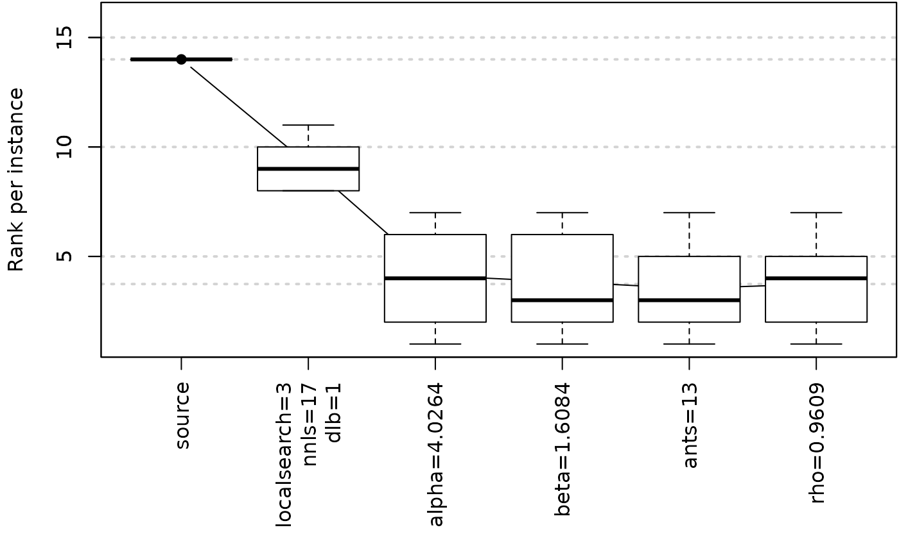

Create plot from an ablation log
(list()|character(1)) Ablation log object returned by ablation(). Alternatively, the path to an .Rdata file, e.g., "log-ablation.Rdata", from which the object will be loaded.
Output filename.
Width provided to create the pdf file.
Type of plots. Supported values are "mean" and
"boxplot".
Vector with the margins for the ablation plot.
Label of y-axis.
Further graphical parameters may also be supplied as
arguments. See graphics::plot.default().
logfile <- file.path(system.file(package="irace"), "exdata", "log-ablation.Rdata")
plotAblation(ablog = logfile)
